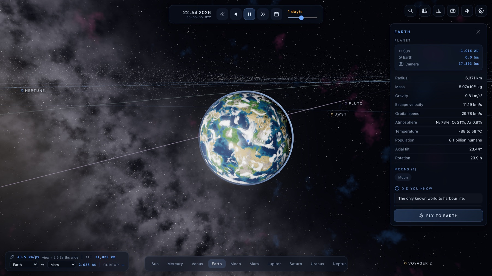
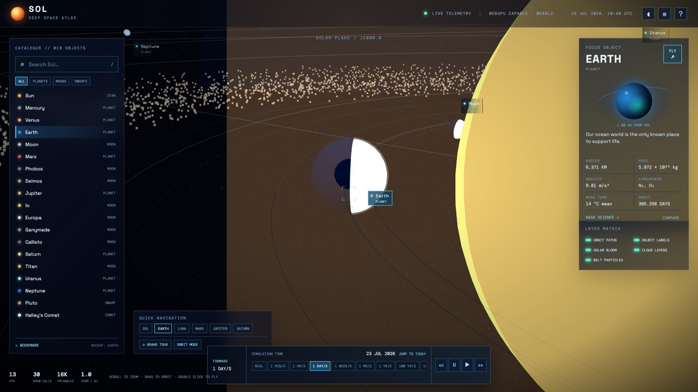

llm-meta-bench · intent comparison · solar-bench
Two models were handed the identical brief — a single sprawling spec for a “AAA-quality, browser-based, real-time Solar System simulator” that should feel like a game, not a website. Each owned the whole build. To compare intent versus execution, I started both apps, used each one's own on-screen navigation to fly to Earth, and captured the frame.
Captured with Playwright driving headless Chromium (WebGL2 via SwiftShader) at 1600×900: load the
app, wait for boot, click the app's own Earth navigation control, let the cinematic
fly-to settle, screenshot. Same procedure for both — the only variable is the code each model wrote.


This brief is really two tests: be scientifically accurate and be cinematically beautiful. Both models passed the first — near-identical, correct reference data and a full sci-fi HUD. They split hard on the second. Fable 5 rendered a textured, cloud-wrapped, atmospherically-lit Earth and directed the camera to arrive on it like a shot in a game. GPT-5.6 Lunar built a competent atlas but left Earth an untextured sphere and let the Sun wreck the framing on the one navigation the user is most likely to try first.
The gap isn't knowledge — it's execution of the aesthetic and camera direction, exactly the part of “AAA” that can't be satisfied by getting the numbers right. It mirrors the coding-pillar story on the scoreboard: correct output is table stakes; the models separate on the demanding, hard-to-specify finish.